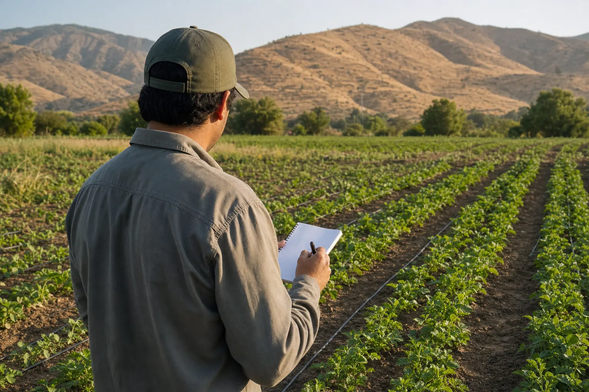

Camilo Jorquera Ovalle
Trabajo en toda la Región de Valparaíso, aplicando ingeniería a la producción de hortalizas y flores, ya sea que esten al aire libre, bajo cubierta plástica y/o en sistemas hidropónicos.

Soy ingeniero agrónomo y trabajo en producción de hortalizas y flores producidas al aire libre, bajo cubierta plástica y/o en sistemas hidropónicos.
Agro-SIP nace de una convicción bastante simple: en terreno se toman demasiadas decisiones costosas sobre supuestos no corroborados. He visto cambiar la fertilización sin saber cómo la matriz hidraulica está distribuyendo el agua, también e visto regar sin haber definido una metodología de balance hídrico del suelo, e visto inviertir en infraestructura para agrandar cuarteles de riego sin conocer la aptitud real del suelo o del caudal que la fuente de agua dispone. Es por ello que la propuesta es medir antes de actuar, ý así decidir la mejor opción frente a un problema u oportunidad.
Mi trabajo es hacer esa medición y traducirla en un plan que se pueda ejecutar. No represento marcas ni vendo insumos, así que la recomendación no tiene ningún interés detrás más que resolver el problema.
Trabajo desde Limache, con alcance a toda la Región de Valparaíso. Mi compromiso es entregar recomendaciones respaldadas por evidencia trazable, objetiva y metodológicamente replicable.
Qué produzco y qué evalúo
- Hortalizas de hoja y de fruto
- Flores de corte
- Producción bajo cubierta
- Hidroponía (NFT y sustrato)
- Suelo y riego
Instrumental y herramientas de evaluación
- Aforo de emisores y evaluación de uniformidad
- Medición de CE y pH en suelo, agua y solución nutritiva
- Determinación de textura y evaluación de perfil de suelo
- Cálculo de agua fácilmente disponible y balance hídrico
- Dimensionamiento hidráulico
Los análisis químicos se derivan a laboratorios acreditados.
Lo que recomiendo, lo pruebo antes
Mantengo una unidad productiva propia de aproximadamente 300 plantas de tomate y physalis, con registro de riego aplicado, CE y pH de solución, desarrollo y estado fitosanitario. Es donde se prueban en escala pequeña las decisiones que después se recomiendan.
Ver la unidad de ensayo en Casos →
Conversemos sobre tu predio.
Cuéntame por WhatsApp qué estás produciendo y qué te está pasando. Sin costo por esa conversación.